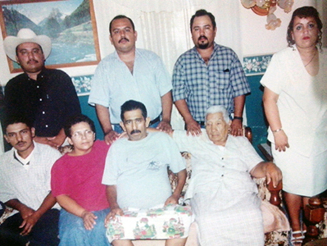

Fotografía de mi familia paterna cuando fuimos de vacaciones Nayarit y a celebrar la fiesta de mi abuela por sus 65 años de vida. Fue un día muy especial y divertido. Aparecen mi familia, algunos hermanos de mi papa y su familia, y gran cantidad de familia de la hermana de mi abuela que viven en Ciudad Obregón.

Fotografía muy vieja de la familia de mi padre, sus padres Leovigildo y Bertha, su abuela Sirenia, y sus hermanos, falta el hermano más chico Christian en la foto. Mi padre es el hijo mayor de todos los hermanos.
Actualmente todos los hermanos de mi papa tienen su familia, Mariano, Joel y Agustina viven en Los Mochis, Ricardo vive en Culiacán, somos una familia muy grande.